Four queen sacrifices, and a trophy
Note: this is the Sunday morning class, but it counts for JJ too. Coach opened by congratulating both the Saturday and Sunday groups, and partway through he said he'd pass this recording to the Saturday kids because the Carlsen game was new material he'd forgotten to show on Saturday.
Bright Chess took the Northern California Under-1000 team championship. Coach says the trophy has four legs, it's very handsome, and it is now sitting at the front of his classroom. He congratulated the Saturday and Sunday groups together.
One student also won a big individual trophy the day before — which led straight into Coach's push about entering tournaments:
That's also his answer to why parents drive their kids in on a weekend: in person simply works better. Next week is a three-day weekend with several tournaments on.
He made this set easier on purpose. The first two weeks used last term's advanced Thursday problems; he saw they were too hard and dialled it back.
Puzzle 7 — the answer is Qg8+!, giving the queen away, and after Kxg8 the knight delivers mate. Coach's point: two different knight moves both mate, so you have to calculate which one you actually want before you commit. Same lesson as the “look for their reply first” rule.
Three students went 6/6 in this class; six managed it in Saturday's, which had more kids in.
The classical games were tied, so it went to rapid tiebreaks. In the fourth one Carlsen played Qh6!! — throwing the queen in — and Karjakin resigned on the spot. That move won him the title.
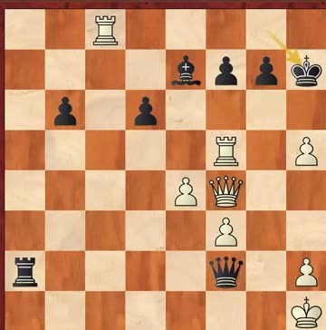
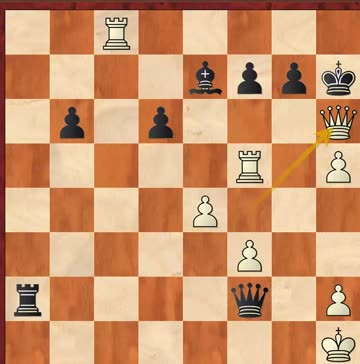
E70 King's Indian · Chile vs USA, round 8 · 24 Oct 1960 · Fischer had Black
1. Don't trade queens when you're the one attacking.
2. …f5! — a pawn offered to rip the centre open. Coach called it a surprise: once the centre opens, White's king is standing in the draught. And if White captures the wrong way, the file stays shut and the king is safe again — so the way you take matters as much as whether you take.
3. Every piece gets a job.
4. Then the exchange sacrifice, and the finish. Rxe3! first, and after 23.Kxe3 comes the move everyone remembers:
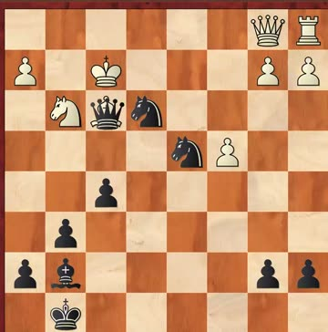
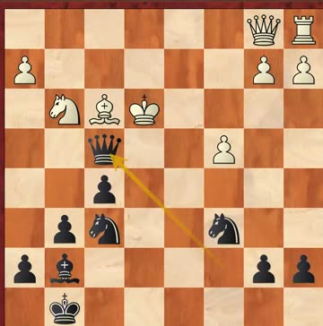
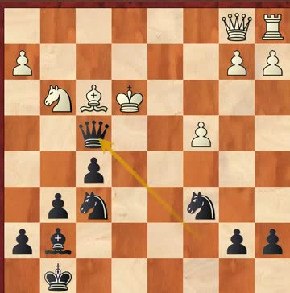
And Coach checked the refusal. If White declines with 24.Kf2, then Ng4+ 25.Kg2 Ne3+ 26.Kf2 Nd4 and it's still lost — the king has no shelter either way. This is rule 3 again: when you sacrifice, calculate the line where they don't take.
US Junior Champion at 13. US adult Champion at 14. Most players who win the junior title need five to eight years to make that jump; Fischer did it in one.
Coach gave two reasons. The first is talent — father a physicist, mother a teacher. But he was careful about it:
The second reason: at 13, Fischer and his mother decided he'd leave school and study chess full time. Coach added straight away — “我不是鼓励你们不上学”, I am not telling you to drop out.
The bit that matters for you: Fischer had thousands of chess books and did puzzles constantly. There were no computers or online training then.
That is the whole reason for the weekly homework, said out loud.
C50 Giuoco Pianissimo / Hungarian Defence · Steinitz — the first world champion — had Black
Another queen sacrifice, but a different kind: a positional one. Steinitz gives the queen and gets an attack down the open h-file instead of an immediate mate.
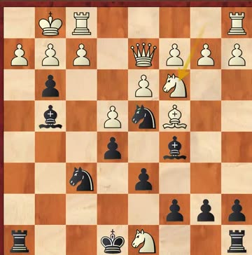
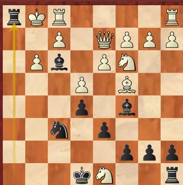
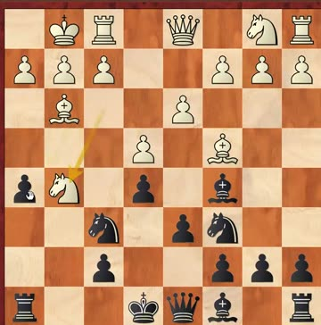
Homework Coach set out loud: nobody in the class had ever played through this game. “把它记住 … 回去再看一遍，review” — remember it, and go back and play through it again at home.
C58 Two Knights Defence, Polerio, Bishop Check Line · lichess blitz 3+2 · played the night before this class
This is the line Coach taught on 22 Aug. He'd lost three previous blitz games to this 2642-rated opponent. Fourth time, he played the variation he'd given the kids — and the trap worked.
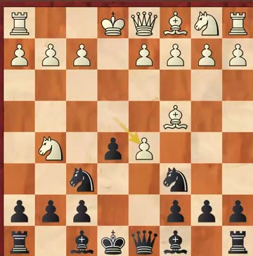
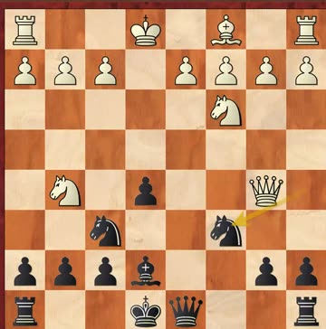
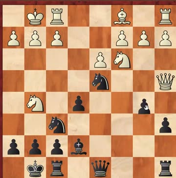
White should have played Qb7, Qb8 or Qa7. Instead he grabbed the centre pawn with 13.Qxe5?? and after 13…Bd6! the queen is caught. Coach also noted 14.Qxd4 loses to Bxh2+.
Worth remembering: he won a game against a 2675 six years ago with the same trap. If you play this line, this is the position to know.